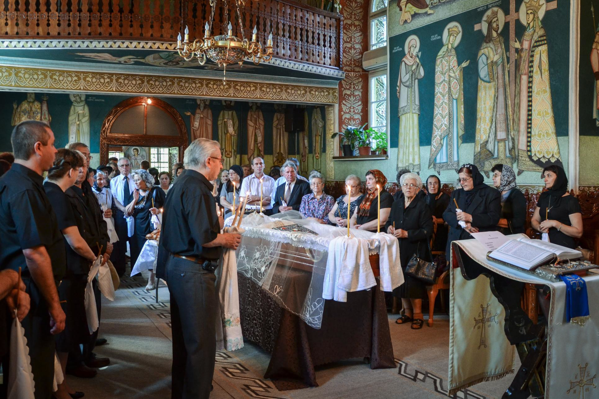
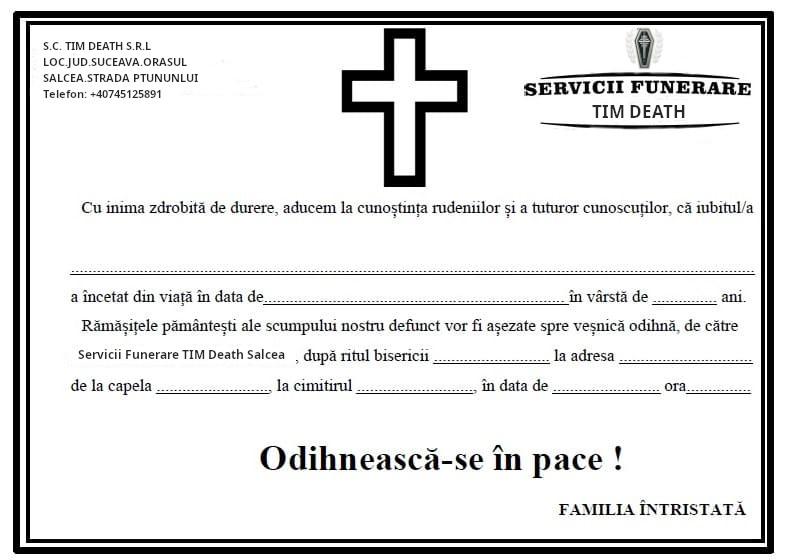
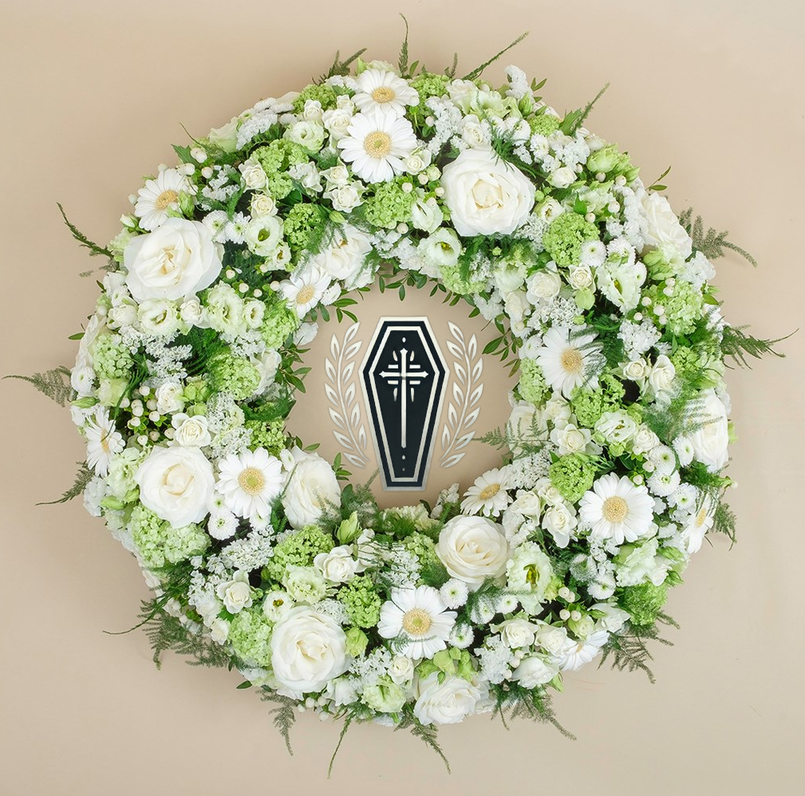
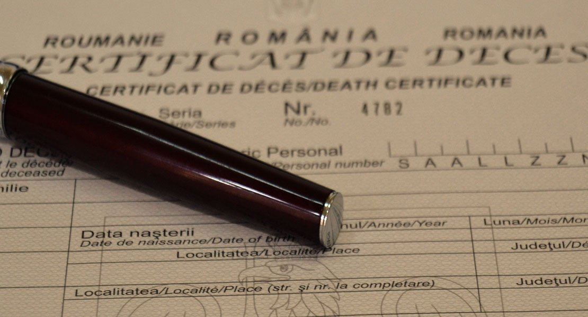
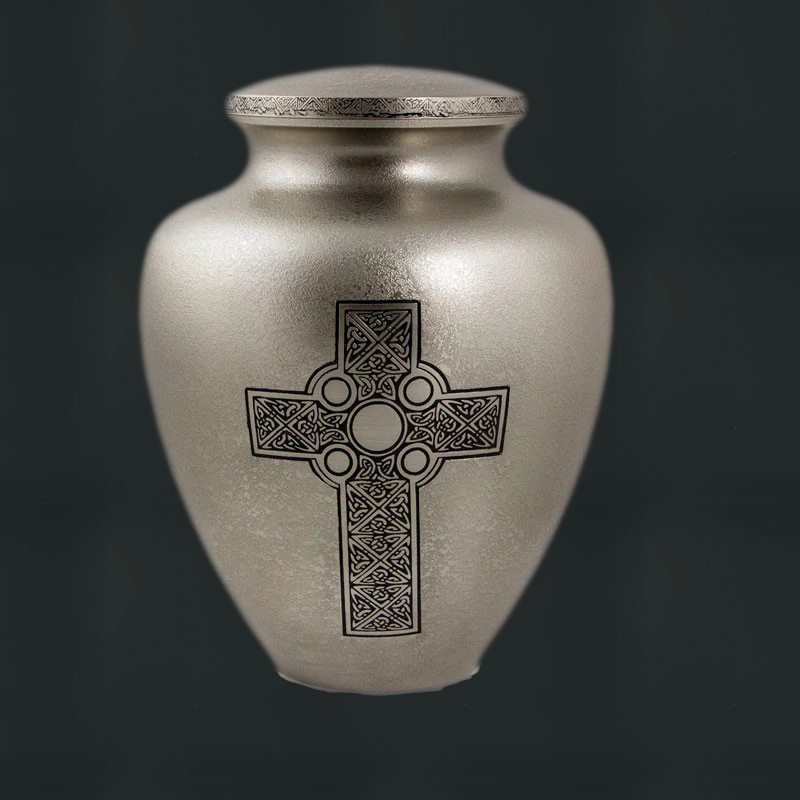
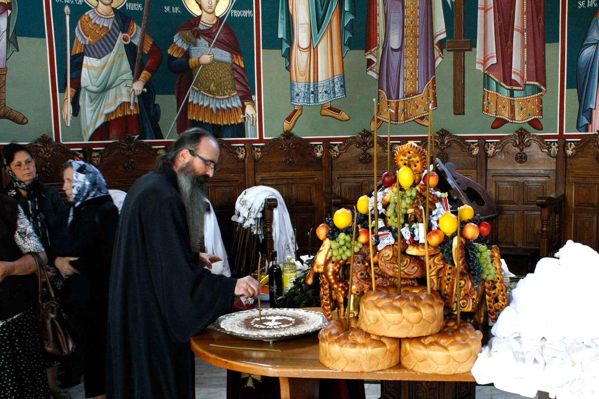

Agentia funerara TIM Death
este aici sa te ajute in momentele cele mai grele
Servicii
1. Transport Funerar. Transportul defunctului de la locul decesului
(spital,
domiciliu, etc.) la capela, biserica sau cimitir.
2. Pregatirea si Toaletarea Decedatului. Imbalsamarea si pregatirea
defunctului pentru inmormantare.
Imbracarea si asezarea in sicriu.
3. Servicii de Sicrie. Oferirea de sicrie de diferite modele, marimi si
materiale, in functie de bugetul si dorintele familiei.

4. Organizarea Slujbei Religioase. Colaborarea cu preoti pentru
organizarea slujbei religioase de inmormantare.
Aranjamente pentru locatia unde va avea loc ceremonia (capela, biserica, etc.).

5. Publicarea Necrologului. Publicarea unui anunt funerar (necrolog) in
ziare, la radio, sau pe diverse platforme online.

6. Servicii Florale. Aranjamente florale pentru sicriu, capela,
biserica sau cimitir (coroane, buchete, jerbe).

7. Obtinerea Actelor Necesare. Obtinerea certificatului de deces.
Obtinerea
autorizatiilor necesare pentru inmormantare. Gestionarea documentelor pentru repatriere (in cazul
transportului international).

8. Servicii de Incinerare. In cazul in care familia alege incinerarea,
firma de pompe funebre poate organiza acest proces.

9. Servicii Post-Inmormantare. Organizarea parastaselor la 40 de zile,
6 luni, un an, sau alte momente importante.
Asistenta pentru gestionarea mormantului sau a cavoului.

10. Consiliere Funerara. Oferirea de consiliere privind formalitatile
si procedurile de inmormantare.
Sprijin emotional pentru familie in aceasta perioada dificila.